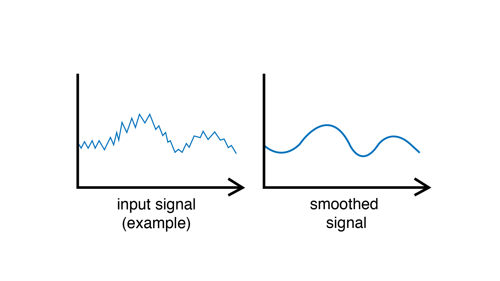

Smoother
Smooths the incoming signal by removing fast variations and noise (high frequencies).
Example
Smooth a sensor over time.
#include <Plaquette.h>
AnalogIn sensor(A0);
// Smooths over time window of 10 seconds.
Smoother smoother(10.0);
StreamOut serialOut(Serial);
void begin() {}
void step() {
// Smooth value and send it to serial output.
sensor >> smoother >> serialOut;
}
Note
The filter uses an exponential moving average which corresponds to a form of low-pass filter.
Reference
-
class Smoother : public Node, public MovingAverage
Simple moving average transform filter.
Public Functions
-
Smoother(float smoothWindow = PLAQUETTE_DEFAULT_SMOOTH_WINDOW)
Constructor.
- Parameters
factor – a parameter in [0, 1] representing the importance of new values as opposed to old values (ie. lower smoothing factor means more smoothing)
-
virtual float put(float value)
Pushes value into the unit.
- Parameters
value – the value sent to the unit
- Returns
the new value of the unit
-
inline virtual float get()
Returns smoothed value.
-
void timeWindow(float seconds)
Changes the smoothing window (expressed in seconds).
-
inline float timeWindow() const
Returns the smoothing window (expressed in seconds).
-
void cutoff(float hz)
Changes the smoothing window cutoff frequency (expressed in Hz).
-
float cutoff() const
Returns the smoothing window cutoff frequency (expressed in Hz).
-
Smoother(float smoothWindow = PLAQUETTE_DEFAULT_SMOOTH_WINDOW)